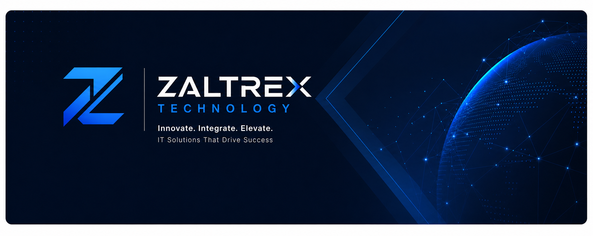
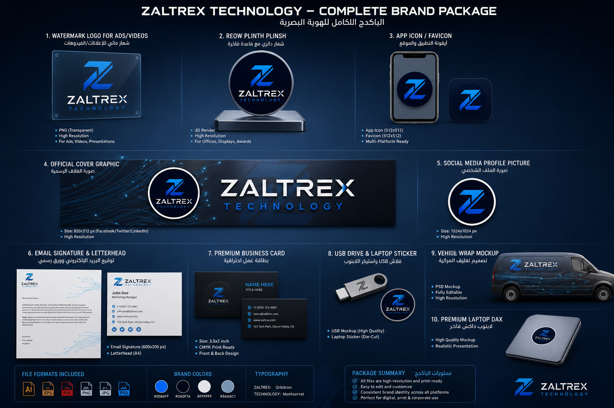
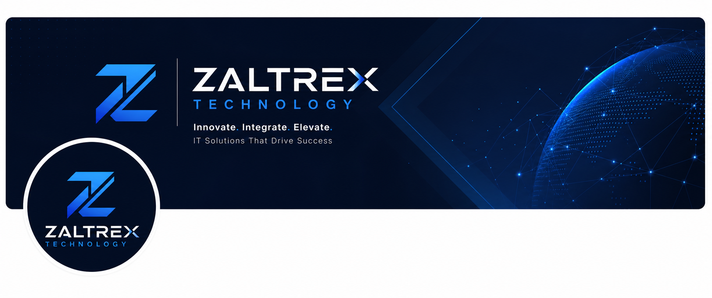
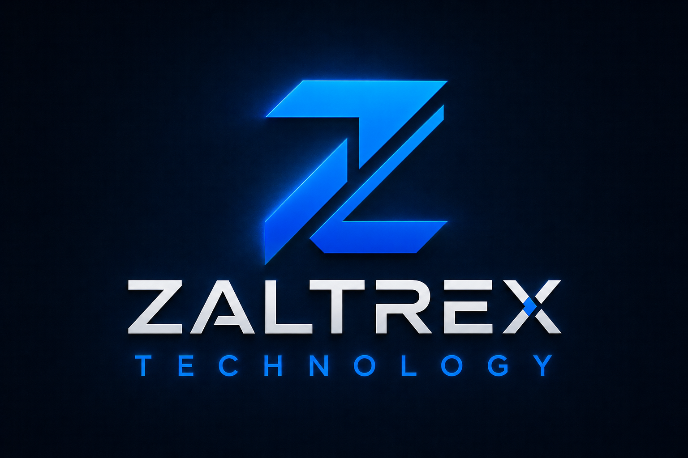

The Precision Engine
For Autonomous Cloud.
Stop assembling fragmented cloud tools. Zaltrex orchestrates distributed microservice fabrics, real-time AI telemetry, and sub-millisecond data paths in one unified sovereign platform.

[07:12:45 UTC] Auto-scaling policy triggered: Provisioned +120 worker pods in Frankfurt cluster.
[07:12:46 UTC] Zero-loss failover verified with 0 dropped frames.
Multi-region redundancy with instant cold-path failover
Zero-downtime rolling upgrades in less than 4 seconds
Real-time log & telemetry processing without backlog spikes
Distributed PoPs positioned directly at Tier-1 internet exchanges
Instant Orchestration. Zero Friction.
Test the Zaltrex orchestration SDK live in your browser. Switch languages, simulate cluster execution, and inspect real-time responses.
# 1. Initialize high-performance cluster with zero-trust encryption
$ zaltrex cluster init --name="prod-omega" --regions=eu-west,us-east --ha
# 2. Deploy autonomous workload with sub-second scale
$ zaltrex deploy ./app.wasm --max-rps=500000 --latency-budget=8ms
# 3. Stream live distributed traces across edge nodes
$ zaltrex telemetry stream --filter="status=error || p99>15ms"Built for Impossible Workloads.
Directly inspect our deployed suites, mission-critical infrastructure blueprints, and proprietary enterprise software packages.

Modular Enterprise Package
Complete multi-tier enterprise architecture. Features autonomous microservice mesh, synchronized telemetry, automated data pipelines, and executive dashboards.

Global Cloud Infrastructure
Ultra-resilient multi-region cloud topology with dynamic load rebalancing, container orchestration, and real-time failover mechanisms.

_b_حلو_اوي_اللوجو_و_الك.jpeg)
AI Copilot & Systems Identity
Integrated generative and predictive inference models running directly on customer edge clusters with zero telemetry leakage.
Benchmark Your Scale & Latency
Adjust the slider to simulate traffic volume and witness how the Zaltrex Rust mesh crushes latency and cloud overhead.
Ready to Upgrade to True Sovereign Cloud?
Deploy your first enterprise sandbox in 90 seconds. Full enterprise access with isolated namespaces and dedicated compute.